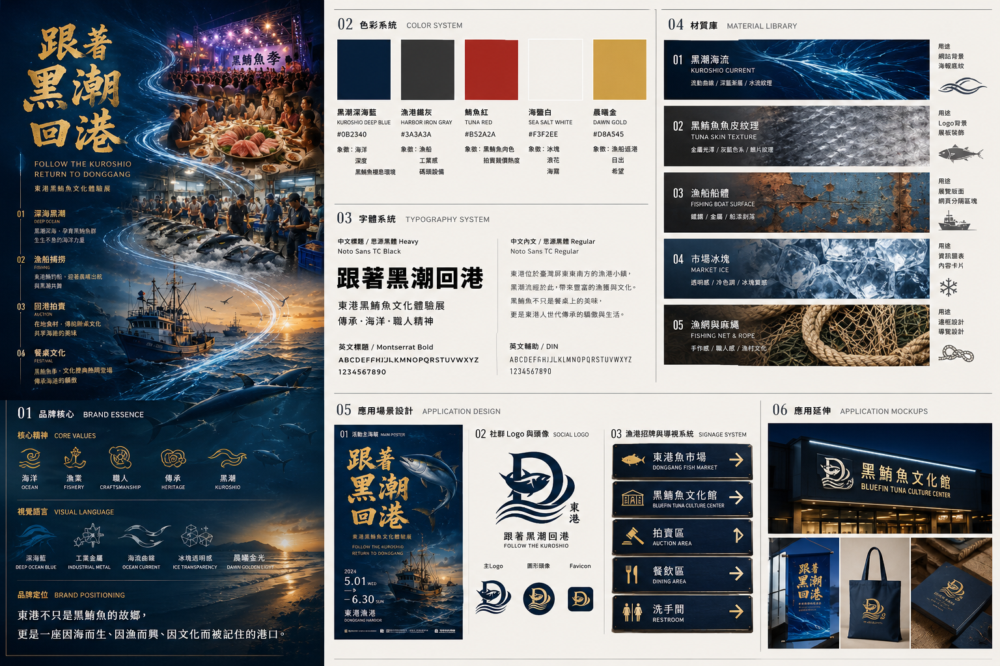

重量
190 kg
體長
2.14 m
成交價格NT$2,014,000
凌晨三點。
東港還未甦醒。
漁船已駛向深海。
每年春夏。
黑鮪魚穿越南方海域。
對東港而言，這是一年的開始。

傳統 × 現代文化交織
在東港，黑鮪魚不止是一道料理。
它與漁船、魚市場、東隆宮信仰、共同構成一座港口的靈魂。
傳統讓日常有根，現代讓文化被重新看見。黑鮪魚文化正是在這兩者之間，持續流動。

CULTURAL PICTURE BOOK
以水彩故事走進黑潮、港口與一尾魚的旅程
Interactive Bluefin Anatomy
點擊魚體部位，理解料理特色與市場價值。

Bluefin Life Timeline
從海洋到餐桌，牠的旅程也串起了東港的生活與文化。
黑鮪魚隨黑潮洄游，從深海開始牠的旅程。
漁民在凌晨出海，憑經驗與技術迎接魚汛。
漁船返航，魚市場與港口開始甦醒。
透過魚眼、魚身、尾切面判斷新鮮度與油脂。
喊價聲響起，第一鮪成為市場與地方的焦點。
魚體被分成不同部位，連結料理與市場價值。
從生魚片到熱炒，黑鮪魚進入人們的日常記憶。
黑鮪魚不只是漁獲，也是東港被看見的文化象徵。
Kuroshio Soundscape
用三段音樂，聽見東港從海上到餐桌的旅程
凌晨、黑潮、漁船出海前的深藍聲景。
漁船返航、海面光線、黑鮪魚回到港口。
魚市場、辦桌、生魚片、黑鮪魚季的地方生活。
一尾黑鮪魚的旅程，
從海洋開始。
經過黑潮、
漁船、
港口與餐桌。
而東港的故事，
至今仍持續著。
每一次漁船返港，
都是另一段旅程的開始。
Behind The Scene
這段旅程是如何被創造的？
從文化研究、視覺設計、聲音體驗， 到 AI 協作創作， 邀請你走進幕後， 看看這個作品誕生的過程。
東港的海，總是在大多數人還沒醒來的時候開始熱鬧。
漁船在夜色中返航，碼頭的燈光映照著海面，魚市場逐漸甦醒。對許多人而言，黑鮪魚或許只是餐桌上的一道料理；但對東港來說，它承載的不只是漁獲，更是一種與海洋共存的生活方式。
本作品以「一尾黑鮪魚的一生」作為敘事主軸，帶領觀者從黑潮海域出發，跟隨漁船返港，經歷驗魚、拍賣、分切、上桌，以及黑鮪魚文化季等重要過程。
透過時間軸式的故事結構，讓文化不再只是被閱讀，而是被體驗。
在設計上，我希望使用者不是站在展覽外觀看介紹，而是成為旅程中的參與者。
因此網站採用沉浸式敘事方式，結合視覺動畫、聲音設計、互動體驗與 AI 協作創作，營造如同數位展覽般的觀看感受。
這不只是關於一尾黑鮪魚的故事。更是關於東港人如何與海洋共生，如何在歲月與潮汐之間，延續一座漁港的文化記憶。
而這段旅程，也將隨著每一次漁船返港，持續向前。

一場從東港出發的數位文化策展
一個問題成為整個專案的起點：「如果黑鮪魚能夠說話，它會如何介紹自己的一生？」我希望讓參觀者不是閱讀介紹，而是親自走過黑鮪魚從海洋到餐桌的旅程。
蒐集東港漁業文化、黑鮪魚洄游、拍賣流程、黑鮪魚季與地方記憶，將真實文化資料整理成網站敘事的基礎。
將文化資料轉化為一條清楚的敘事航線：海洋 → 漁船捕撈 → 進港 → 驗魚 → 拍賣 → 分切 → 餐桌 → 文化祭典。
利用 Kling AI 生成時間軸影片，透過提示詞設計、畫面測試與多次修改，建立符合東港黑鮪魚文化的視覺內容。
時間軸影片本身保留環境音，另外透過 Suno AI 製作網站瀏覽時的背景配樂，讓整體體驗更有海洋、港口與文化展覽的氛圍。
透過 HTML、CSS、JavaScript 建立互動式文化網站，並優化響應式排版、影片播放、音樂控制、動畫效果與瀏覽體驗。
從文化研究到 AI 協作，最後完成一場能被瀏覽、聆聽與感受的東港黑鮪魚文化旅程。
使用AI prompt 生成不是一次完成，而是透過觀察、修正與再生成，逐步接近理想成果。
初版 Prompt：A giant bluefin tuna displayed in the center of an empty Donggang auction hall,wet concrete floor reflecting golden light,buyers slowly walking toward the fish,Taiwan fishing harbor atmosphere,quiet anticipation before the auction begins,cinematic documentary,slow camera dolly movement,ultra realistic,4k,no Korean text,no Japanese text,no foreign language signs,Taiwan
初版 Prompt：Donggang Bluefin Tuna Festival,night concert beside the harbor,crowds cheering,stage lights illuminating the night sky,people enjoying bluefin tuna feast,traditional banquet tables filled with seafood,fireworks over the harbor,summer festival atmosphere,celebration of bluefin tuna season,warm golden lights,cinematic documentary,Taiwan local culture,epic ending,ultra realistic